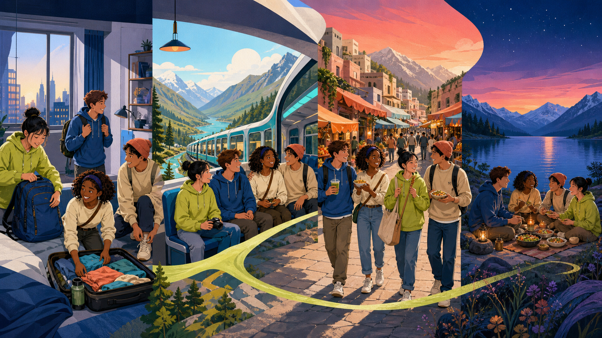
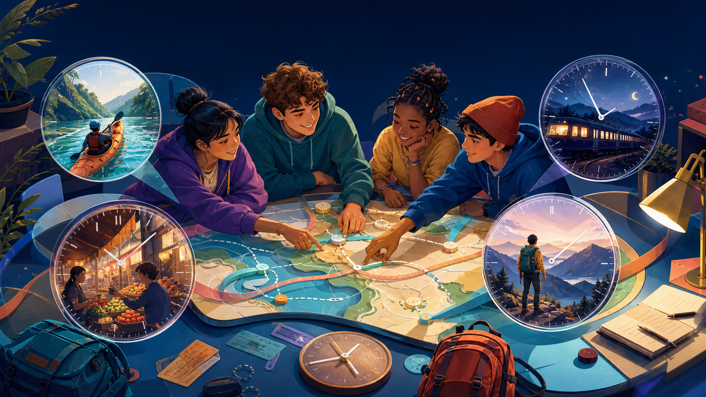

Freeze one future moment. What will everyone be doing?
Check-in
At 8 p.m. next Saturday, where will you be?
Choose a place. Then add one action: "I will be..."
Lesson 09 bridge
AI can predict a trip. Can it see the moment?
Last lesson: "AI will plan our route." This lesson: zoom into one exact time.
Visual prediction
Tomorrow at 6 p.m., what will they be doing?
Choose a scene and make your own sentence before revealing the model.
Learning promise
By the end, you can look through a future-time lens.
01Noticewhen an action is in progress in the future
02Buildpositive, negative and question forms
03Askpolite questions about expected travel plans
04Plana journey and describe its future moments
Vocabulary discovery
Six actions keep a journey moving.
Vocabulary practice
Connect the travel partners.
Select one phrase on the left and its partner on the right.
Pronunciation
Make the strongest syllable land.
Tap a word, clap the strong syllable, then say it naturally.
Grammar discovery
Which sentence shows the action in progress?
OR
Choose, then explain what the time phrase does.
Meaning
The clock freezes one moment inside a longer action.
At 7 p.m., we will be riding the train.
The action starts before that moment and continues after it.
Timeline
Tomorrow at noon sits inside the journey.
NOW
NOON TOMORROW
LATER
11:00 START - 12:00 WE WILL BE HIKING - 14:00 FINISH
At noon, the hike is not finished. It is in progress.
Form: positive
Keep will be. Change the action to -ing.
subject+will be+verb-ing
One person
She will be exploring.
=
Many people
They will be exploring.
The form stays the same for every subject.
Negative + question + short answer
Move one part. Change the job.
They will be staying at a hostel.
subject + will be + verb-ing
They won't be staying at a hostel.
subject + will not / won't be + verb-ing
Will they be staying at a hostel?
Will + subject + be + verb-ing?
Yes, they will. / No, they won't.
Do not repeat "be staying" in the short answer.
Use 2: polite expected plans
Ask without sounding like an interview form.
Future Continuous can make a plan question feel natural and polite.
Will you be staying with friends?
Which question sounds like you expect a plan already exists?
Time expressions
Which phrases create a clear future window?
Tap every phrase that can open a future-time lens.
Future Simple vs Future Continuous
Choose the camera angle.
THE WHOLE EVENT
We will visit the market tomorrow.
Future Simple
/
INSIDE ONE MOMENT
At 3 p.m., we will be visiting the market.
Future Continuous
Choose a camera angle and say a sentence.
Connected speech
Let the small words travel together.
WEwill-beTRAVell-ingatNINE
We'll be travelling at nine. /wi:l-bi/
Strong: WE - TRAV - NINE. Light: will be - ell-ing - at.
Common mistakes
Find the missing or broken piece.
Controlled practice
Complete each future snapshot.
Tap a sentence, then choose the correct form from the two options.
Sentence builder
Choose three pieces. Make the moment visible.
Who?
When?
What?
Choose who + when + what.
Visual story
Four times. One journey. What will be happening?

Choose a time marker. Predict first, then reveal the model.
Teacher-read listening
The train to Karakol
Listen once for the route. Listen again for four actions in progress.
Tomorrow will be a long day for Dani and his cousins. At 7 a.m., they will be packing the last few things. By 10, they will be travelling east on the train. While the train crosses the valley, Dani will be taking photos and his cousins will be playing cards. When they arrive in Karakol, their guide will be waiting near the station. That evening, they will be staying in a small guesthouse near the lake.
Comprehension + noticing
What did the future camera capture?
Pair speaking
Ask to complete the missing itinerary.
Traveller A
9:00boarding the train
13:00
17:00exploring the old town
Traveller B
9:00
13:00travelling through the valley
17:00
"What will you be doing at 1 p.m.?" "I'll be..."

Final production
Build a four-stop future day.
03:00
Include: one transport moment + one meal + one unexpected change.
Use at least 4 future continuous sentences and 1 polite question.
Review quiz
Can your camera hold the form?
1. At 8, we ___.
2. Negative?
3. Question?
4. Main meaning?
LIVE SCORE
0 / 4
One choice per question. Explain why.
Homework + reflection + exit
Write from one future moment.
DRAWOne sceneChoose a real or imaginary trip and show one exact future time.